Esse capitulo é para quando você estiver brava comigo, então você vai ler ele muito kkkkk. Eu sei que eu te irrito muito ou as vezes faço coisas das quais te tiram do sério mas saiba que essa nunca foi e nunca será a minha intenção porque eu te amo muito e eu sempre so quero te ver sorrindo, e se as vezes você se irritar com uma das minhas brincadeiras pode ter certeza que só fiz isso para ver o seu lindo sorriso pelo qual eu sou apaixonado inteiramente e eternamente!!!
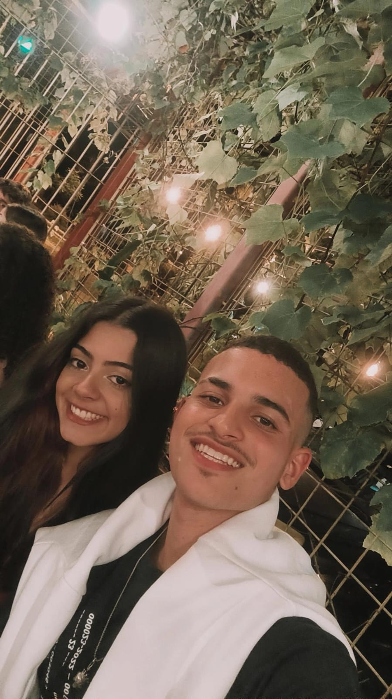Livro da Sofia
Livro dedicado a minha princesa e dona do meu coração Sofia Ferreira Silva, a qual eu me apaixonei desda nossa primeira troca de olhares. Esse Livro foi feito para acompanhar a Sofia pelo resto da vida afim de lhe fazer bem em qualquer momento que ela esteja passando
- Leia-me quando estiver brava comigo
- Leia-me quando não conseguir dormir
- Leia-me quando estiver com saudades
- Leia-me quando precisar de um abraço
- Leia-me quando estiver estressada
- Leia-me quando se sentir desanimada
- Leia-me quando quiser ter ideias
- Leia-me quando estiver confusa
- Leia-me quando estiver com medo
- Leia-me quando se sentir triste
- Leia-me quando for nosso aniversário de namoro
- Leia-me quando estivermos a muito tempo longe
- Leia-me pensar em mim
- Leia-me quando estiver feliz
- Leia-me quando precisar de mim
- Leia-me quando estiver insegura
- Leia_me quando estiver preocupada com o futuro
- Leia-me quando a vida não fizer mais sentido
- Leia-me quando for tomar uma decisão importante
- Leia-me quando for o seu aniversário
1. Leia-me quando estiver brava comigo
2. Leia-me quando não conseguir dormir
Esse capitulo é para quando você não conseguir dormir, e quando você não conseguir dormir então você deveria estar conversando com o seu namorado agora, e caso ele não consiga falar com você agora saiba que ele te ama muito e que ele não ia gostar nadinha de ver a princesinha dele dormindo mal, e claro que antes de dormir não pode esquecer de tomar água, é o mais importante, não pode esquecer nunca de nós dois, tanto como namorados como casados. Durma Bem Minha Princesinha, eu te amo pitiquinha, e eu espero que você tenha bons sonhos com nós...
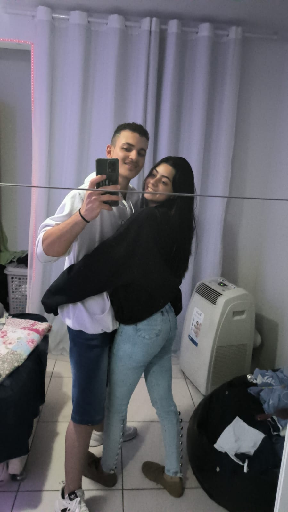3. Leia-me quando estiver com saudades
Esse capitulo é para quando você estiver com muita saudade, mas sempre que você precisar ler esse capitulo, lembre-se que eu sinto muito mais saudades de você ó.A gente se completa sem sombra de duvidas e você com certeza sempre vai ser minha melhor companhia, por isso a saudade vai fazer parte de nossas vidas porque nós nos amamos muito e sempre queremos ficar um ao lado do outro, mas sempre que tiver com saudade de mim e so você se lembrar do abraço apertado que eu vou te dar quando te encontrar e dos 1001 beijinhos que você vai ganhar depois disso ó.
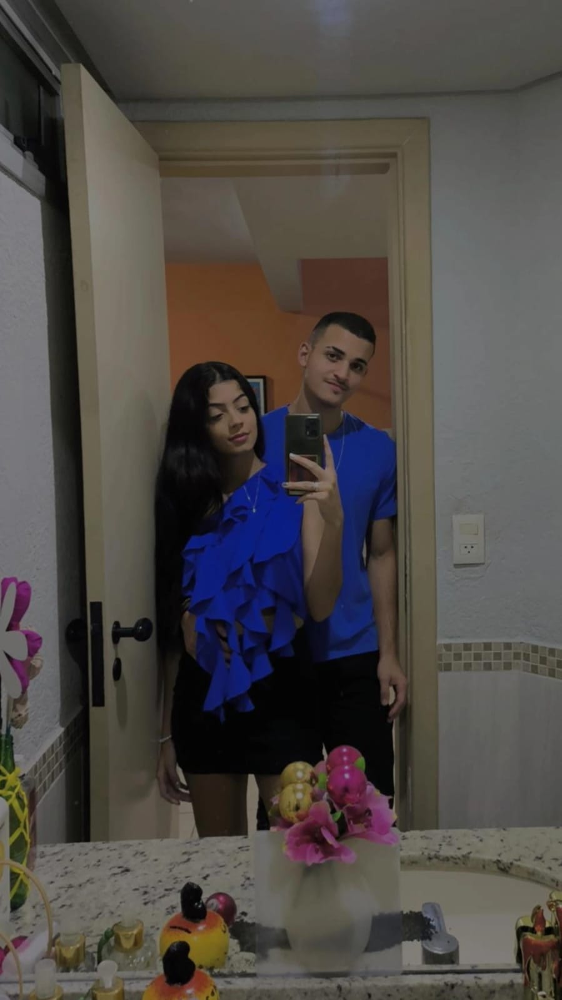4. Leia-me quando precisar de um abraço
Esse capitulo é quando você estiver precisando de um abraço.Eu posso não estar com você agora enquanto você lê isso, mas saiba que eu faria de tudo para te dar um abraço nesse momento, e que o seu abraço me traz o maior conforto e a melhor paz do mundo e espero que minha princesinha se sinta assim tambem.Sempre que você precisar de um abraço seja qual for o motivo lembre-se que eu estou aqui para tudo e lembre-se tambem que quando eu tiver junto com você, abraço nunca ira faltar. EU TE AMO MINHA PRINCESINHAAAA!!!
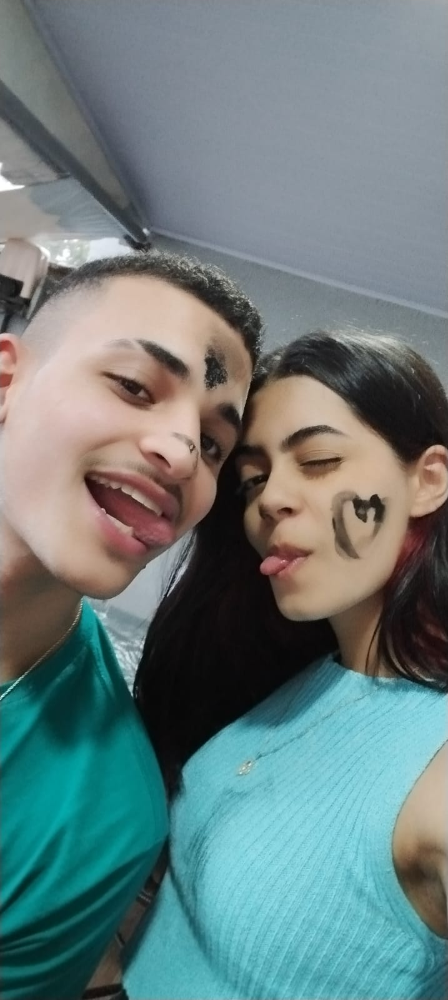5. Leia-me quando estiver estressada
Se você está lendo isso agora então é porque você esta estressada e eu espero que não seja comigo kkkkkk.Antes de tudo eu queria dizer que você fica muito linda e fofinha estressada, apesar de eu não gostar quando você fica estressada.Espero que você leia isso com a minha voz e rindo, até porque eu sempre tento te tirar um sorriso quando você esta estressada.É lembre-se, nunca é bom ficar estressada e que quando eu tiver junto com você eu posso fazer qualquer coisa para te acalmar, pode ser coisa fofa ou coisa sapequinha ó hihihhihi.Te amo Linda.
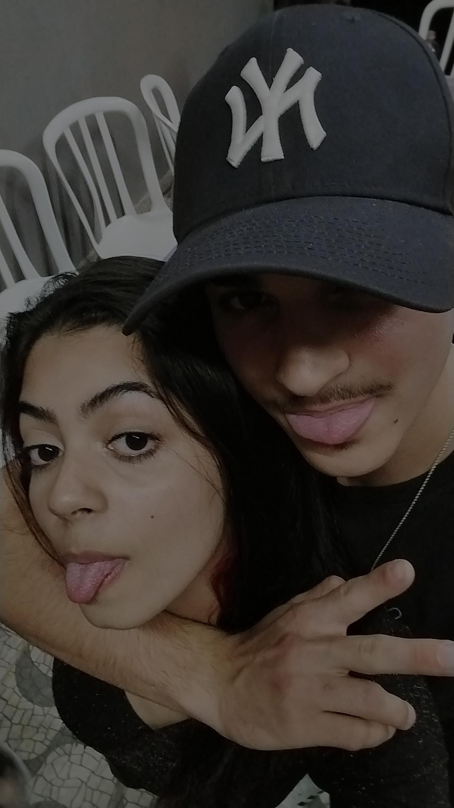6. Leia-me quando se sentir desanimada
Se você está lendo este capitulo então com certeza você esta desanimada, e eu não gosto quando você fica assim até porque você é a minha deusa que sempre consegue me animar, independente da situação.Então leia isso e lembre de mim e que eu estarei sempre ao seu lado mesmo não me tendo por perto, saiba que eu te acho a pessoa mais incrivel do mundo e que eu penso em você todos os dias.Você é uma pessoa maravilhosa por dentro e por fora, com um sorriso espetacular, um corpo esculturado, a personalidade mais marquante de todas, e com certeza a pessoa mais dedicada que eu conheço, e obviamente tambem é muitoooo animada com suas coisas kkkkkk. Eu te adoro muito ó minha deusa!!!
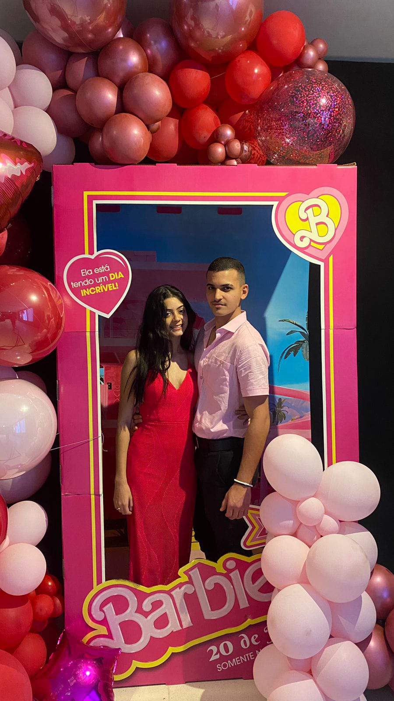7. Leia-me quando quiser ter ideias
Eu não sei porque você esta lendo este capitulo ate porque você é a pessoa mais criativa de cheia de ideias que eu conheço, então oque eu posso fazer agora e tentar te dar um pouco de motivação para alguma ideia.Você sempre foi muito criativa com os meus presentes, que inclusive eu amo cada um deles e ainda lembro de todos, se você tiver precisando de alguma ideia e so você lembrar de mim que eu tenho certeza que alguma ideia vai surgir.Na verdade, se você tiver precisando de alguma ideia você tem que me ligar neste exato momento que eu tenho certeza que alguma coisa vai vir kkkkk.
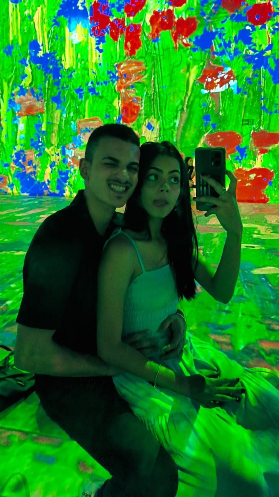8. Leia-me quando estiver confusa
Eu não sei com oque você está confusa, mas eu quero que você respire fundo agora e olhe bem essa nossa foto com roupas combinando mesmo sendo o nosso primeiro date juntos depois do nosso primeiro beijo, para mim esse foi um dos dias mais marcantes da minha vida, porque oque eu sentia quando estava com você não podia ser explicado por nada e nem ninguem, eu com certeza nunca fiquei confuso quando estava com você, e se por acaso você continue confusa com qualquer coisa que seja então você precisa conversar com alguem que te entenda e com alguem que você possa desabafar sobre tudo, que obviamente e seu namorado lindo e gostoso(Eu).Ta esperando oque ainda?Vem me ver logo ou me ligar logo ó, tô esperando.
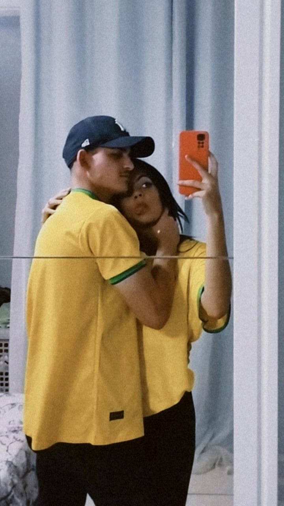9. Leia-me quando estiver com medo
A minha namorada é incrivel e mesmo eu achando ela extremamente corajosa ela ainda tem medo de muitas coisas.Amor, eu quero que você não fique com medo de nada, tem coisas que não podemos controlar, se puder controlar não tem porque ter medo, e se não puder controlar então nem faz sentido ter medo.Se você estiver com medo é só você se olhar no espelho e se olhar como eu te olho.E eu te vejo como uma mulher valente e que o mundo nunca poderá intimidar, e se mesmo assim você ficar com medo saiba que eu sempre estarei aqui para de proteger, e não importa o momento, eu vou te proteger sempre, até porque é você que da sentido para a minha vida, é você que deixou o meu mundo colorido, passando tantos momentos incriveis ao seu lado.
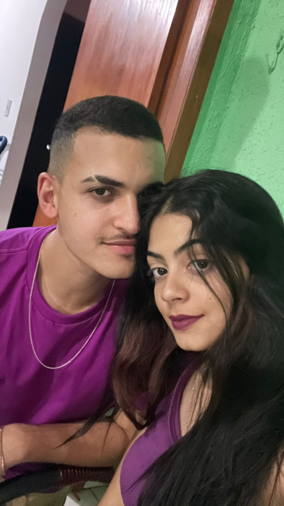10. Leia-me quando se sentir triste
Se tem uma coisa que me quebra o meu coração é ver você triste, então eu espero que você nunca mais fique triste para precisar ler este capitulo. Infelizmente as tristezas fazem parte da vida, e isso pode vir de pessoas proximas de você ou não, cada um tem o seu jeito quando está triste mas com certeza você precisa de alguem para ficar junto, mesmo que sem falar nada, porque tudo isso deixa mais leve.Então deixe eu ser essa pessoa para acabar com sua tristeza, deixa eu ser essa pessoa em que você possa confiar e desabafar ou até mesmo que te faça companhia mesmo sem precisar trocar uma única palavra.Mesmo você estando triste, deixe eu poder te fazer feliz denovo.
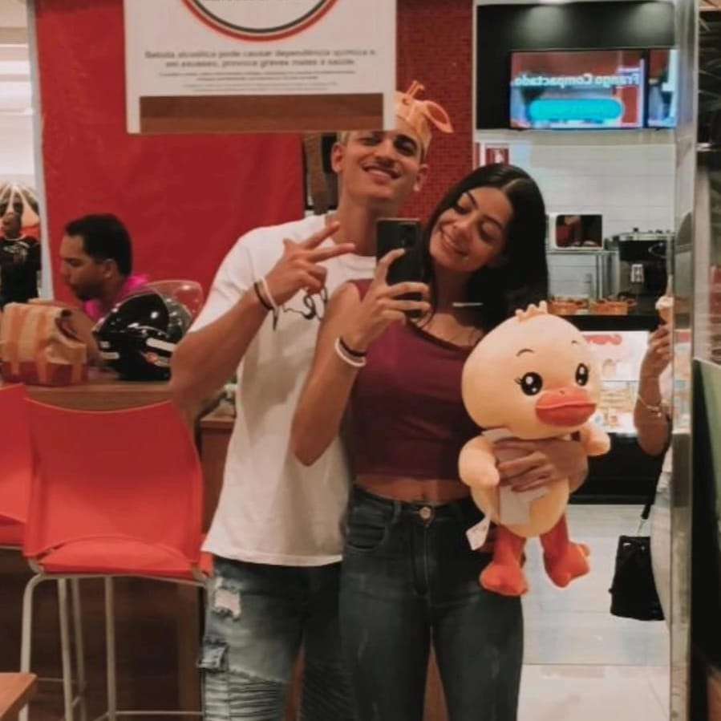11. Leia-me quando for nosso aniversário de namoro
Este capitulo é muito importante, até porque é o capitulo do nosso aniversário de namoro que é uma data que nunca esqueceremos, pois ela marca o começo que dizemos o nosso primeiro "Eu Te Amo", que obviamente veio de mim primeiro, até porque não tinha como eu não dizer nada depois de passar momentos extraordinarios ao seu lado.Eu precisava de falar "EU TE AMO" porque eu nunca conseguiria viver uma vida sem graça sem você ao lado, se você estiver lendo este capitulo então hoje é um dia especial tanto para mim quanto para você, e saiba que você ainda vai ler muito este capitulo porque eu não te solto nunca mais.Você é minha preciosa, a minha joia mais valiosa, e com certeza o amor de toda a minha VIDA!!!
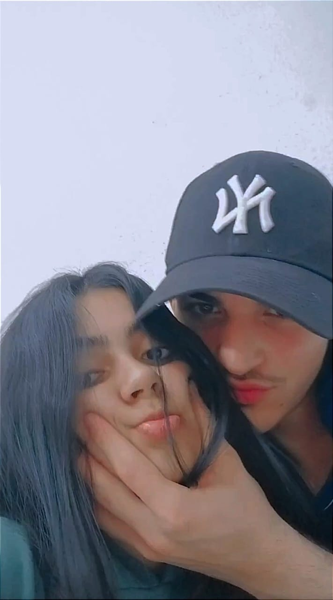12. Leia-me quando estivermos a muito tempo longe
Se você esta lendo este capitulo então com certeza está com muita saudade porque nós estamos a muito tempo longe um do outro, e olha que desde que nós nos conhecemos a gente nunca ficou mais de 2 semanas sem se ver kkkkk.Se você esta longe de mim lembre-se que este capitulo é uma das formas que nós podemos ficar proximos mesmo estando tão longe.Saiba que a distância nunca sera capaz de mudar as coisas entre nós, nada nunca vai mudar oque eu sinto por você, então não se preocupe ó, até porque quando eu te ver denovo nós iremos matar nossa saudade de todas as maneiras possiveis, e ainda iremos comemorar isso com uma comida de sua preferencia, mesmo sendo sushi ó.Eu te amo minha RAINHA.

13. Leia-me quando pensar em mim
Se você está lendo este capitulo então isso significa que você esta pensando em mim, e eu espero que você não lembre de mim como um cara chato que sempre te irrita ou discorda de você, é sim como o seu namorado lindo que se importa com você, que é engraçado e ama te fazer rir com brincadeiras idiotas, que te motiva, te elogia e te trate como a Rainha que você é.Se você está lendo este capitulo eu fico muito feliz com isso porque quer dizer que você me tem agora nos seus pensamentos, e eu quero que saiba que eu farei tudo para continuar em seus pensamentos, mas claro que vai ser fazendo você lembrar coisas boas sobre mim.EU TE AMO PARA TODO A VIDA MEU AMOR, E SAIBA QUE EU VOU SEMPRE TE PROTEGER E CUIDAR DE VOCÊ.
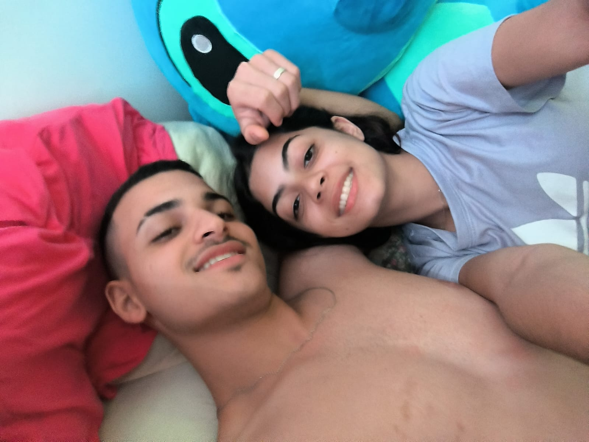14. Leia-me quando estiver feliz
Primeiramente eu amo te ver feliz, então se você está lendo este capitulo isso é uma boa noticia, e eu espero que eu tenha sido o motivo de sua felicidade, mas mesmo não sendo eu estarei feliz, saiba que quando você está feliz então eu tambem estou, e eu quero que você saiba que você tem um sorriso lindo é uma vibe muito extraordinaria quando esta feliz, e eu amo isso, então obrigado por compartilhar esse seu sorriso e essa sua vibe comigo.E se você não tiver mais motivo para ser feliz lembre-se que você é um mulherão da porra em todos os aspectos, então só de se olhar no espelho e te ver, ja é um novo motivo para ficar feliz.
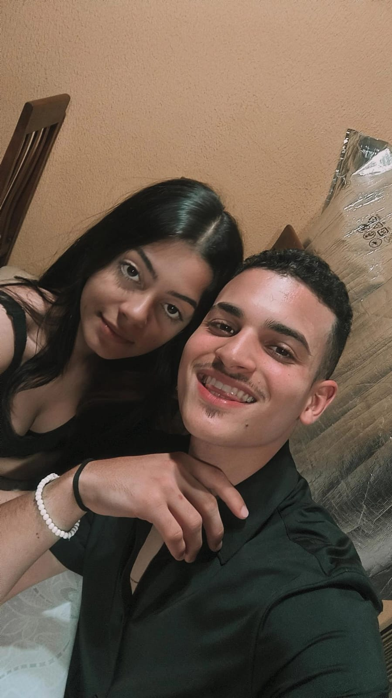15. Leia-me quando precisar de mim
Se você está lendo este capitulo então é porque você precisa de mim, então é claro que eu farei de tudo para te ajudar, então você ja deveria ter me ligado independente do motivo. Se você precisar de mim nem precisa pensar duas vezes, eu estou aqui para te ajudar com tudo que você precisar, e lembre-se que não ha nada que você já não consiga fazer porque você é uma mulher maravilhosa, e claro que tem um namorado maravilhoso então se juntar os dois não tem para nada e nem ninguem, então pode vir pedir minha ajuda amorzinho que nós resolvemos isso rapido e sem preocupação, até porque quando estamos juntos nós podemos fazer de tudo.
 23.48.43_8ba5b813.jpg)
16. Leia-me quando estiver insegura
Se você está lendo este capitulo então é porque você precisa ser lembrada do quão incrivel você é, e eu não falo isso porque sou seu namorado, porque eu tenho certeza que todo mundo que te conhece pensa do mesmo jeito que eu. Você é uma mulher linda, independente, inteligente, comunicativa e claro que muitoooo gostosa. Não podemos esquecer que você me conquistou tanto com as suas atitudes quanto com sua beleza sem igual. Então se você continua insegura você só precisa se lembrar de tudo que você já deu conta de fazer e de tudo que continua fazendo, você é impressionante meu amor, eu nunca duvidei de sua capacidade até porque eu sei que para você nem o ceú é o limite. Me liga para eu poder te dizer tudo isso meu amor. Beijinhos e Eu Te Amo.
 23.51.18_39010825.jpg)
17. Leia-me quando estiver preocupada com o futuro
Se vocêd está lendo este capitulo então é porque você pensou no nosso futuro e acabou ficando preocupada,e eu não sei qual o motivo da preocupação mas saiba que não tem oque temer ou se preocupar enquanto continuarmos juntos, e olha que vamos continuar juntos para todo o sempre.Eu te amo minha princesinha e claro que faz parte se pegar pensando no nosso futuro e acabar ficando preocupada, até porque eu as vezes fico pensativo sobre isso, mas quando eu penso em nós juntos eu so consigo imaginar coisas boas e so fico pensando nas tantas memórias que iremos construir juntos.Eu te amo minha Tchutchuquinhaaa.

18. Leia-me quando a vida não fizer mais sentido
Eu sei que você vive falando que a vida não faz sentido por termos que trabalhar para viver, e isso eu concordo. Mas desdo dia em que eu te conheci, você me fez perceber que a vida é muita mais do que trabalho e do que qualquer outra coisa, você me ensinou que a vida é feita de momentos e cabe a nós fazer desses momentos bons ou ruins, e claro que eu escolhi fazer todos os meus momentos incriveis. É por isso eu quero viver o resto de minha vida ao seu lado, aproveitando cada segundo, então eu só quero te fazer entender que infelizmente precisamos trabalhar para poder viver, mas a vida não é resumida à isso. Eu sei que você já sabe disso mas a minha maior motivação é você, e eu estou disposto a trabalhar e me esforçar pra caramba só para poder te proporcionar tudo oque você deseja.Então só respira e viva, deixe a vida te levar e deixe eu te fazer feliz.
19. Leia-me quando for tomar uma decisão importante
Quero começar dizendo neste capitulo que a decisão mais importante da sua vida você ja tomou que foi responder os meus storys kkkkk. Brincadeiras a parte amor, se você esta lendo este capitulo então você espera que este capitulo possa te ajudar com isso, mas antes de você pensar em uma resposta, você deve pensar em todas as alternativas e claro que você deve escolher a opção que mais te favorece, e caso você ainda esteja em duvida então você deve falar disso com o seu namorado porque ele é um homem super decidido. É quando você for tomar essa decisão importante, lembre que não adianta nada você ficar nervosa ou com medo das consequências, porque isso é algo que você não pode controlar, mas que mesmo assim eu tenho certeza que você vai conseguir resolver tudo, é claro que você tambem tem a minha ajuda, a ajuda do seu futuro marido.

20. Leia-me quando for o seu aniversário
Este talvez seja o capitulo mais importante e especial de todos, e esse capitulo é oque eu mais estava esperando chegar para eu poder escrever.Se você está lendo isso eu quero que saiba que isso tudo deu um trabalhão mas que eu amei fazer do começo ao fim, e vou amar ainda mais se você sempre lê-lo e lembrar de mim com aquele sorrisinho lindo no rosto que eu adoro adimir. Hoje é o seu aniversário mas não é so hoje que você merece presentes, você merece todas as coisas boas que este mundo tem à oferecer e merece isso todos os dias. Você é linda, engraçada, inteligente, companheira, você é tudo oque eu sempre quis e por isso hoje é um dia especial, porque hoje é o dia que minha namorada perfeitinha veio a esse mundo e por conta disso eu vivo o melhor momento da minha vida. Este capitulo é um agradecimento, até porque hoje quem faz aniversário é você, mas sou eu que ganho com isso todos os dias, e sou só eu que tenho o privilegio de conhecer, namorar e casar com um mulherão desses, que eu tanto amo e adimiro. Obrigado por ser você, obrigado por me deixar sem palavras sempre que te vejo, é obrigado mais uma vez por me aceitartod ao seu lado, mesmo que com todos os meus defeitos. EU TE AMO SOFIA FERREIRA SILVA, eu te amo hoje, e vou te amar todos os outros dias, porque todos eles vão ser como hoje para todo o sempre.
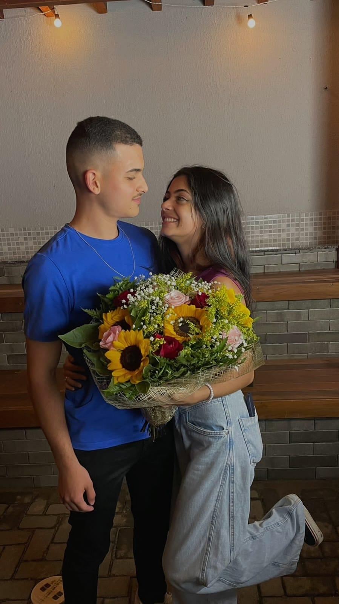
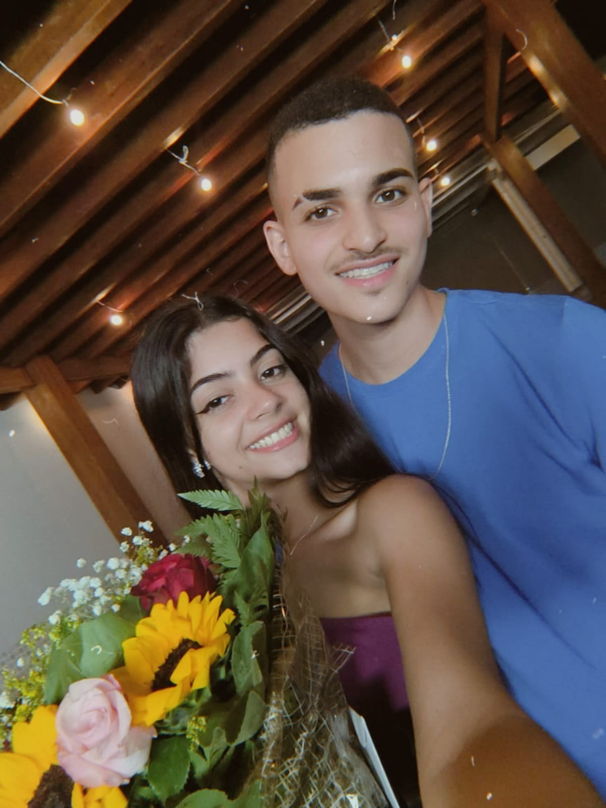